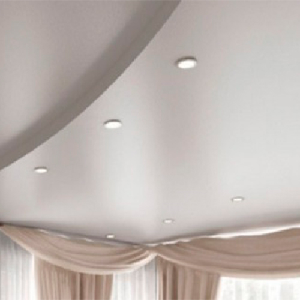

<div class="container project project-view">

    <div class="row">
        <div class="col-md-8 project-images">
            
        </div>
        <div class="col-md-4">
            <div class="project-info">
                <h3>Сатин</h3>

                <div class="spacer-single"></div>


                <div class="details col-12">

                    <div class="info-text">
                        <span class="title">Производитель</span>
                        <span class="val">Франция; Германия; Китай.</span>
                    </div>

                    <div class="info-text">
                        <span class="title">Материал</span>
                        <span class="val">ПВХ</span>
                    </div>

                    <div class="info-text">
                        <span class="title">Запах</span>
                        <span class="val">Без запаха</span>
                    </div>


                    <div class="info-text">
                        <span class="title">Толшина</span>
                        <span class="val">00.18 мм; 00.21 мм; 00.24 мм</span>
                    </div>

                     <div class="info-text">
                        <span class="title">Ширина</span>
                        <span class="val">До 5 метров</span>
                    </div>

                    <div class="info-text">
                        <span class="title">Цена</span>
                        <span class="val">От 120 лей м2 белый<br>От 180 лей м2 цветной</span>
                    </div>


                </div>


                <p>Популярность сатина насчитывает не одно столетие. Впервые сатин начали производить
                    в Китае из хлопка, шелка или шерсти. Особенность этого материала в том, что оно имеет
                    специальное сатиновое переплетение нитей. Нити для ткани очень плотно скручены и чем
                    плотнее кручение нити, тем сильнее блеск. Сейчас сатин также изготавливают из синтетических нитей.
                    Сатин имеет шелковистую гладкую поверхность с лицевой стороны. Применяется ткань очень широко –
                    от пошива изысканных платьев и элитного постельного белья до натяжных потолков. Благодаря своей
                    прочности и долговечности сатиновые потолки превосходят любые другие виды.
                </p>


                <h3>Достоинства сатинового потолка</h3>
                <p>Сатиновые натяжные потолки не принадлежат ни к глянцевым, ни к матовым видам. Отличительная его черта – фактурная поверхность с нежным перламутровым блеском и легким отражением без бликов от осветительных приборов. Сатин создает нежный элитный дизайн. Учитывая отзывы людей, мы пришли к выводу, что наиболее востребованными являются голубой, белый и нежный светло-фисташковый цвета.

                    Полотно из сатина создает идеально ровную и прочную поверхность. Отдельного внимания заслуживает игра света, которую создают отблески, характерные для натуральных тканей. При любом освещении потолок вашей комнаты будет выглядеть незаурядно. Он поистине достоин стать украшением королевского будуара.


                </p>


            </div>
        </div>
    </div>
</div>